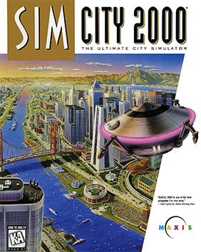

Simulation · 1993
SimCity 2000
Isometric zoning, water pipes and arcologies; civic planning as a pastime.

Cover: Wikipedia: SimCity 2000
Facts
- Released
- 1993-01-01
- Genre
- City Builder
- Category
- Simulation
- Platforms
- Nintendo, PC, PlayStation, Retro home computer, Sega
- Developers
- Full Fat, Maxis
- Publishers
- Electronic Arts, Maxis, Nintendo DSi, Sega, Zushi Games